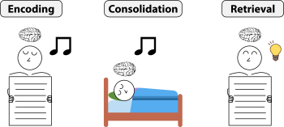

8.6: Memory Reconsolidation—New Views and Applications
Early perspectives of memory believed that memory storage was a singular and linear process, such that each time we remembered a prior experience, the original memory trace was retrieved (Alberini & LeDoux, 2013). However, recent work suggests that memories are susceptible to change, and as a result, memories can be distorted each time they are retrieved. In other words, it’s possible that each time we recall a memory of a past event, it might change a little. Our memories are not fixed recordings of an event, but rather, dynamic reconstructions that evolve. This process is known as memory reconsolidation. Below, we briefly discuss current perspectives on reconsolidation and how researchers leverage reconsolidation to selectively update memories.
Memory Reactivation
Although it’s well-established that memories become consolidated or stabilized over time, scientists are actively investigating the neural mechanisms underlying memory consolidation. Neuronal firing patterns present during encoding are repeatedly reactivated during ‘offline’ periods of post-encoding rest (e.g., sleep, awake rest) (McCleland et al., 1995; Alvarez and Squire, 1994; Tambini & Davachi, 2019). Indeed, landmark animal research revealed that place cells within the hippocampus that were active during recent exploration were preferentially reactivated during subsequent sleep (Pavlides & Winson, 1989; Wilson & McNaughton, 1994). Place-cell activation patterns observed during exploration and subsequent sleep were absent in pre-exploration sleep. Thus, the neuronal reactivation after exploration represented a replay of waking experiences. Critically, memory reactivation during sleep is linked with improved memory the next day.
Although early rodent research focused on reactivating spatial memories, recent human research has demonstrated memory reactivation of nonspatial, episodic experiences (Tambini & Davachi, 2019). In an fMRI study, participants learned pairs of items that consisted of an object and a picture of a scene. Researchers analyzed brain activation in the medial temporal lobe while participants encoded the pairs and while they rested after encoding. Participants were later tested if they remembered the object that was paired with a scene. Results showed that brain activation during encoding and rest was highly similar for remembered pairs; whereas brain activation during encoding and rest was dissimilar for forgotten pairs (Staresina et al., 2013). These results show that memory reactivation occurred during the post-encoding rest period, and was linked to subsequent memory performance.
Researchers have begun examining when memory reactivation most likely occurs. Reactivation of neuronal sequences are most pronounced during a brain state that can be measured with EEG, called high-frequency oscillatory events or sharp wave ripples (SWRs) (Skaggs & McNaughton, 1996). Although SWRs can occur during periods of awake rest, they primarily occur during slow-wave-sleep, also known as non-rapid-eye-movement (NREM) sleep, which is thought to be the most restorative stage of sleep. Several studies have shown that disturbances to SWRs can impair learning and later memory (Tambini & Davachi, 2019). These memory impairments likely stem from disrupted memory reactivation. In sum, given the mounting evidence connecting reactivation to later memory performance, researchers increasingly view neural reactivation as a key mechanism underlying memory consolidation in humans.
Targeted Memory Reactivation
Targeted memory reactivation (TMR) is a noninvasive technique to selectively strengthen or weaken memories during sleep or awake rest (Oudiette & Paller, 2013). In TMR studies, sensory cues (e.g., sounds or scents) are paired with items (e.g., words or pictures) during a learning session. During subsequent sleep, the same sensory cues are presented to trigger the reactivation of the associated memory and thereby strengthen the memory for specific items (Hoffman et al., 2024) (Figure 14). Indeed, several TMR sleep studies have reported enhanced memory for items that were cued during sleep compared to items that were not cued (Rasch et al., 2007; Rudoy et al., 2009). Critically, this memory benefit is attributed to the memory reactivation processes described in the section above. A recent meta-analysis reviewed 90 TMR studies and found general support for TMR-related memory benefits and that the effects of TMR are most pronounced during non-rapid-eye-movement stages of sleep, and particularly slow-wave-sleep (Hu et al., 2020).

TMR has been shown to be effective across different types of memory, including declarative and procedural memory. Given the compelling experimental findings, researchers have begun examining applications of TMR to improve people’s lives. For example, recent TMR studies on vocabulary and grammatical learning have found TMR-related memory benefits (Batterink et al., 2017). Thus, using cues to reactivate memories during sleep could support language acquisition in educational contexts. Moreover, given the relationship between TMR and procedural memory, TMR could be leveraged to support motor skill development (Cousins et al., 2014). This might be applied to improve athletic or musical performance, or to clinical disorders related to motor impairments. Finally, TMR is not only applied to strengthen memories, but several studies have explored using TMR to weaken specific memories (Simon et al., 2018; Schectman et al., 2020). Thus, TMR has been proposed to be a psychotherapeutic instrument for weakening memories related to traumatic events, which is especially relevant for anxiety or post-traumatic stress disorder (PTSD). However, the relationship between TMR and emotional memories remains mixed—one study showed that TMR-related memory benefits appeared for neutral, but not emotional memories (Groch et al., 2016), whereas another study showed that TMR was indeed effective for dampening emotional memories (Lehmann et al., 2016). Targeted memory reactivity (TMR) is an exciting and rapidly evolving area of research with potentially impactful applications.
Media Attributions
- Targeted Memory Reactivation © Wikipedia is licensed under a CC BY (Attribution) license
_-_The_Noun_Project.svg){kind=link}
The process in which reactivated memories become transiently sensitive to modifications